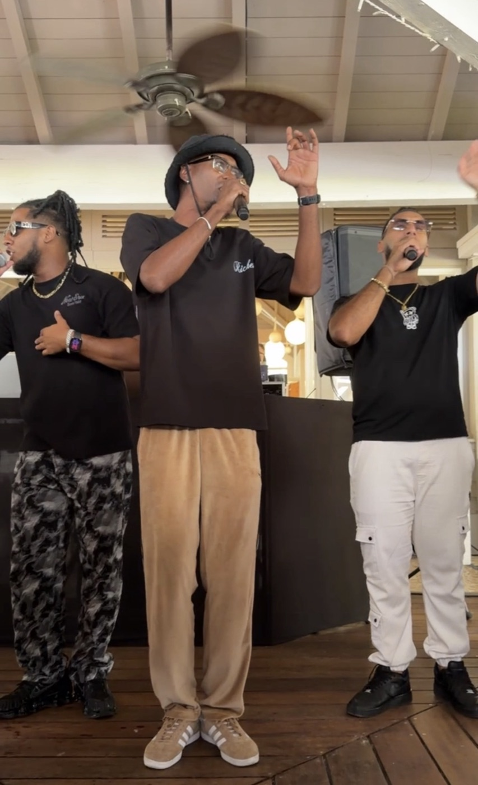
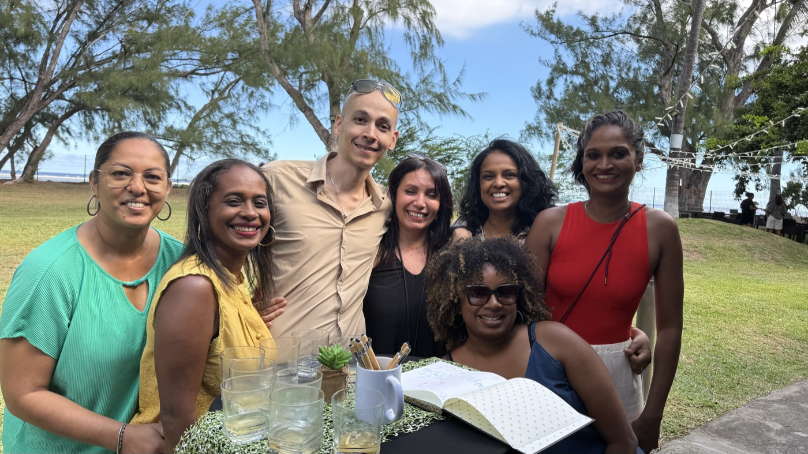

Il y a des collaborations qui se mesurent en années. Depuis 4 ans, Crédit Moderne confie chaque année son séminaire d'entreprise à Pull Up Événements, à La Réunion. Une fidélité qui en dit long — et qui repose sur une recette simple : un séminaire où l'on travaille sérieusement… sans jamais s'ennuyer. Voici les coulisses d'un séminaire d'entreprise réussi, année après année.

Un cadre en bord de mer, une plénière qui a du sens
Chaque édition change de décor — nouveau lieu, nouvelle ambiance — mais garde le même esprit. Cette année, direction le bord de mer : un cadre ouvert sur l'océan qui met les esprits en condition. La plénière n'est pas un défilé de slides : messages clés de l'année, cap stratégique (arbitrer au bon niveau, piloter, accompagner l'innovation, place à l'exécution), le tout rythmé par une sonorisation et une mise en scène soignées. Le fond ET la forme.
L'ingrédient qui change tout : l'animation
C'est là que se joue la différence. Un séminaire Pull Up, ce sont nos animateurs micro qui tiennent le rythme et l'énergie de la journée, un DJ pour faire monter l'ambiance, des humoristes, des remises de prix qui valorisent les équipes, et ces moments d'émotion partagée où tout le monde rit ensemble. Parce qu'un message passe mille fois mieux quand il est porté par la joie que par une présentation de plus.

Le team building intégré au séminaire
Chez nous, le team building n'est pas une option à côté : il s'insère dans le déroulé du séminaire. Ateliers de cohésion, jeux d'équipe, défis participatifs — les collaborateurs sortent de la salle, se mélangent, se découvrent autrement. C'est ce qui transforme une journée de travail en un vrai moment d'équipe, et c'est aussi pour ça que nos séminaires laissent une trace bien après le jour J. Découvrez notre programme type d'un séminaire de 2 jours.

Pourquoi Crédit Moderne renouvelle chaque année
La vraie preuve d'un séminaire réussi, ce n'est pas la photo de fin — c'est le rendez-vous repris l'année suivante. Si les ressources humaines et la direction de Crédit Moderne nous font confiance les yeux fermés depuis 4 ans, c'est parce qu'elles n'ont rien à porter : lieu, logistique, technique, restauration, animation, team building et coordination du jour J, tout est pris en main. Elles arrivent, elles profitent de leurs équipes, et l'événement se déroule.
Envie du même séminaire pour vos équipes ?
Que vous soyez une grande maison ou une PME réunionnaise, nous concevons votre séminaire sur mesure, partout à La Réunion — de l'Ouest balnéaire aux Hauts au vert. Pour aller plus loin, lisez notre guide d'organisation de A à Z ou notre comparatif des régions. Parlons de votre projet au 06 93 81 78 82 — devis sous 48 h.